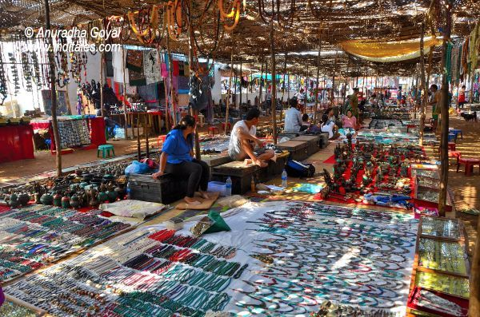

Welcome to Goa!
Certainly! Goa is a state located on the western coast of India, and it is known for its stunning beaches,
vibrant nightlife, rich cultural heritage, and delicious cuisine. Here's some detailed information about Goa:
Key Attractions:
-
Beaches:
Goa is renowned for its beautiful beaches, such as Baga Beach, Calangute Beach, Anjuna Beach, and Palolem Beach.
Historical Sites:
Explore historical forts like Aguada Fort, Chapora Fort, and archaeological sites like the Basilica of Bom Jesus.
Wildlife:
The Bhagwan Mahavir Wildlife Sanctuary and Mollem National Park offer a glimpse of the region's biodiversity.
Beach Parties:
Goa is a hub for nightlife with beach parties, shacks, and clubs attracting tourists from around the world.
Flea Markets:
Anjuna Flea Market and Mapusa Market are popular spots for shopping and experiencing the local culture.

Colonial Influence:
Goa was a Portuguese colony for about 450 years until it was annexed by India in 1961.
Cultural Diversity:
The state has a diverse cultural heritage, influenced by Indian and Portuguese traditions.
Festivals:
Goa celebrates various festivals, including Carnival, Shigmo, and the popular Shri Shantadurga and Shri Mangeshi Zatra.
Local Cuisine:
Don't miss out on trying Goan cuisine, known for its use of seafood and unique spices.
How to Reach:
Goa can be reached by air, train, and road. The Dabolim Airport is the main airport in Goa.